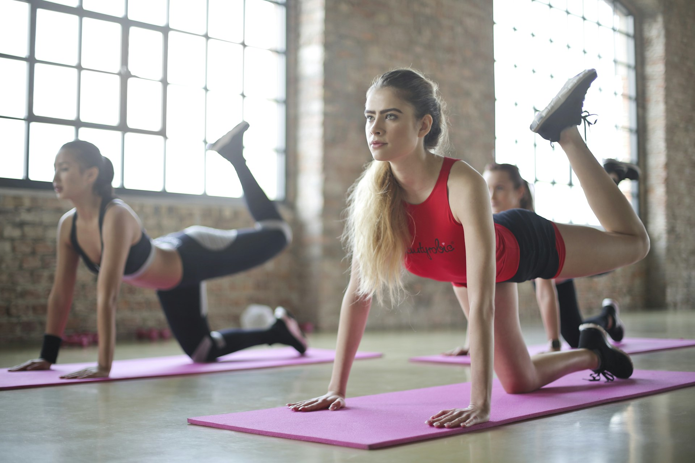
Oblique Pilates Studio · Samseong-dong
오블리크 필라테스는 움직임의 본질에 집중합니다.
당신만의 리듬으로, 몸의 중심을 되찾으세요.
Programs
목표와 몸 상태에 따라 설계된 프로그램.
불필요한 움직임은 없습니다.
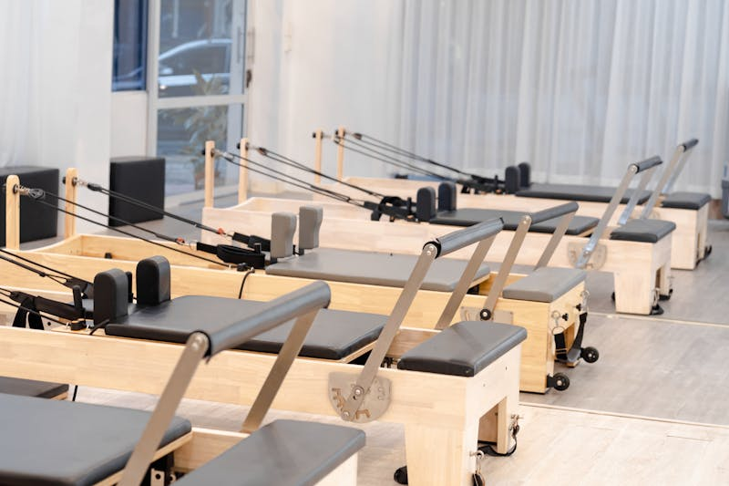
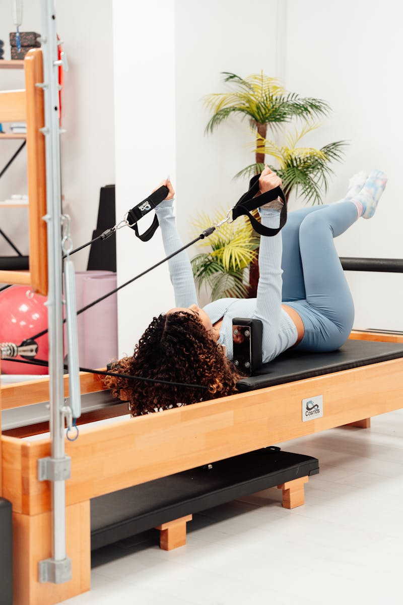
₩80,000 / 회
온전히 당신만을 위한 시간.
체형 분석을 기반으로 개인 맞춤
프로그램을 설계합니다.
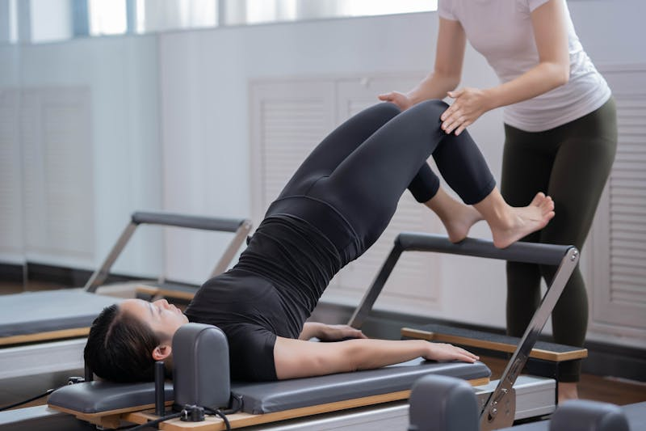
₩45,000 / 회
소수 정원 4인. 개인 교정의 밀도는
유지하되, 함께하는 에너지를 더합니다.
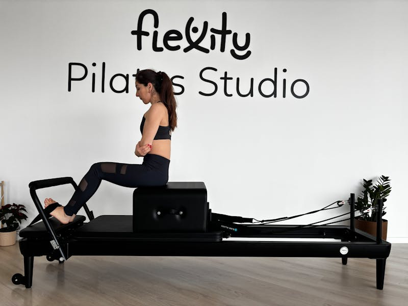
₩100,000 / 회
수술 후 회복, 만성 통증 관리.
의료진 협진 하에 안전하게 진행합니다.
Instructors
PMA 인증 전문 강사진이 해부학적 이해를 바탕으로
정확한 움직임을 안내합니다.
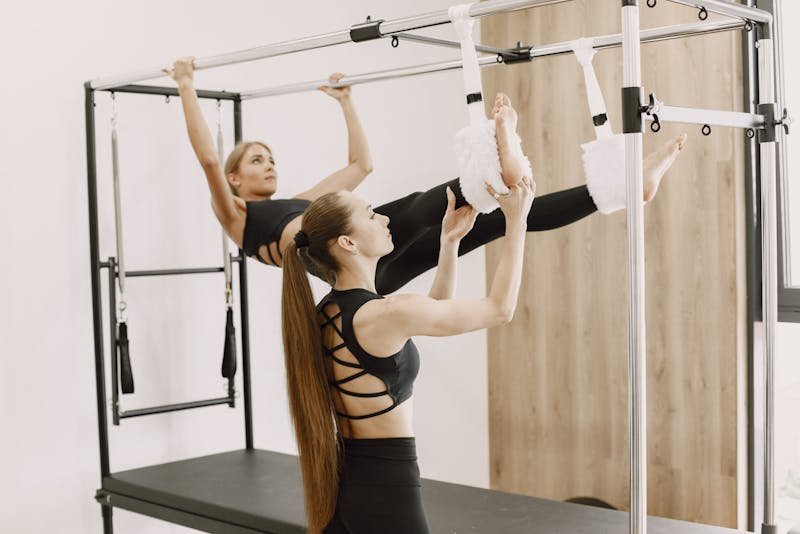
Head Instructor · PMA-CPT
해부학 전공. "몸은 거짓말을 하지 않습니다.
움직임이 답을 알고 있어요."
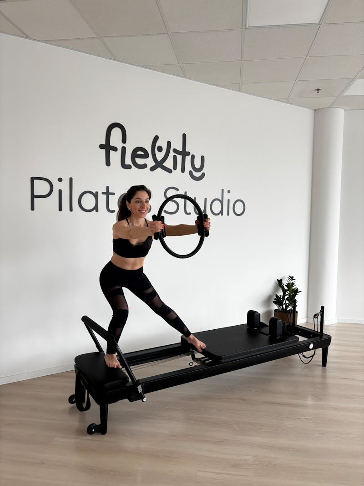
Senior Instructor · PMA-CPT
재활 필라테스 전문.
"작은 변화가 큰 차이를 만듭니다."
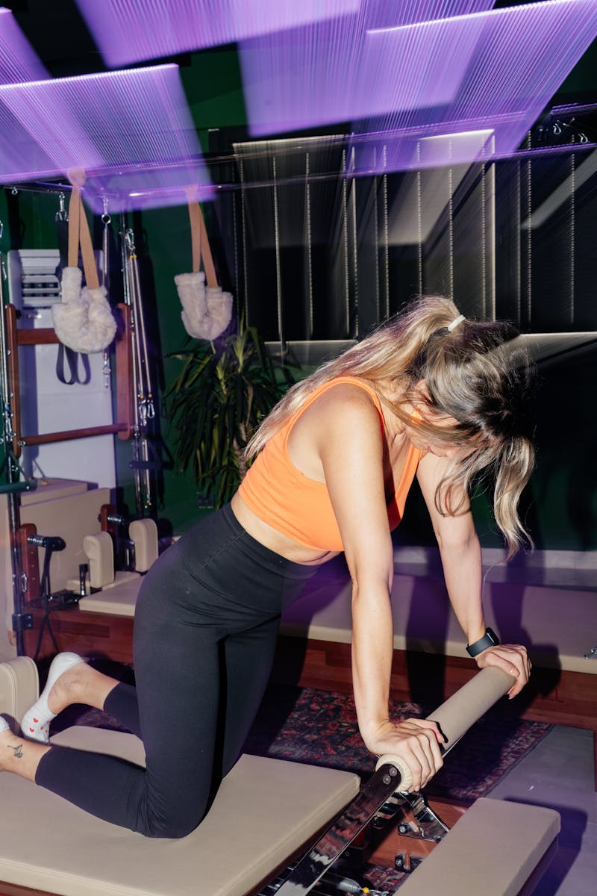
Instructor · PMA-CPT
무용학 전공. "균형은 억지로 만드는 것이
아니라 되찾는 것입니다."
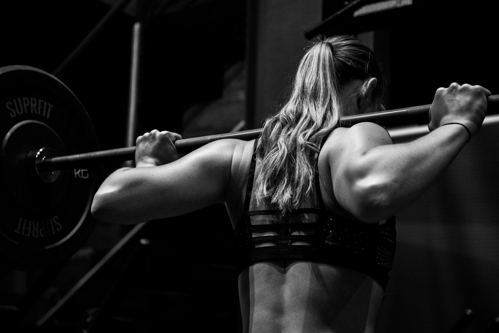
자연광이 드는 오블리크 스튜디오에서
온전히 나에게 집중하는 시간.
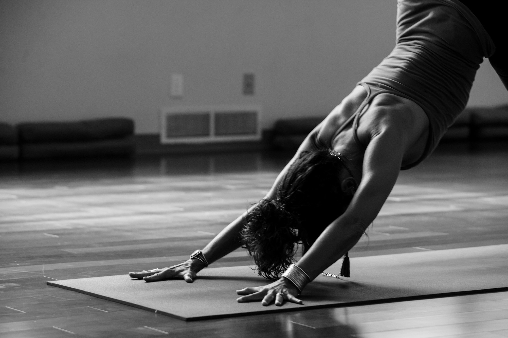
Process
생활 습관과 운동 이력,
불편한 부위를 파악합니다.
자세 평가와 움직임 패턴을 분석해
현재 상태를 진단합니다.
분석 결과를 바탕으로
개인 커리큘럼을 설계합니다.
매 세션의 변화를 기록하고,
프로그램을 조율합니다.
Reviews
"허리 통증 때문에 시작했는데,
3개월 만에 자세가 완전히 바뀌었어요.
이제는 앉아 있는 것도 편해졌습니다."
김○○
30대 · 직장인
"출산 후 틀어진 골반이 걱정이었는데,
재활 프로그램 덕분에
자신감을 되찾았습니다."
박○○
40대
"매일 앉아 있는 직업이라
목과 어깨가 늘 무거웠는데,
지금은 훨씬 가벼워요."
이○○
20대 · 디자이너
FAQ
물론입니다. 초기 상담에서 경험과 몸 상태를 충분히 파악한 후,
기초부터 안내해 드립니다.
움직임에 방해되지 않는 편안한 운동복이면 충분합니다.
양말과 개인 수건을 지참해 주세요.
수업 24시간 전까지 앱 또는 전화로 변경이 가능합니다.
건물 내 지하주차장을 2시간 무료로 이용하실 수 있습니다.
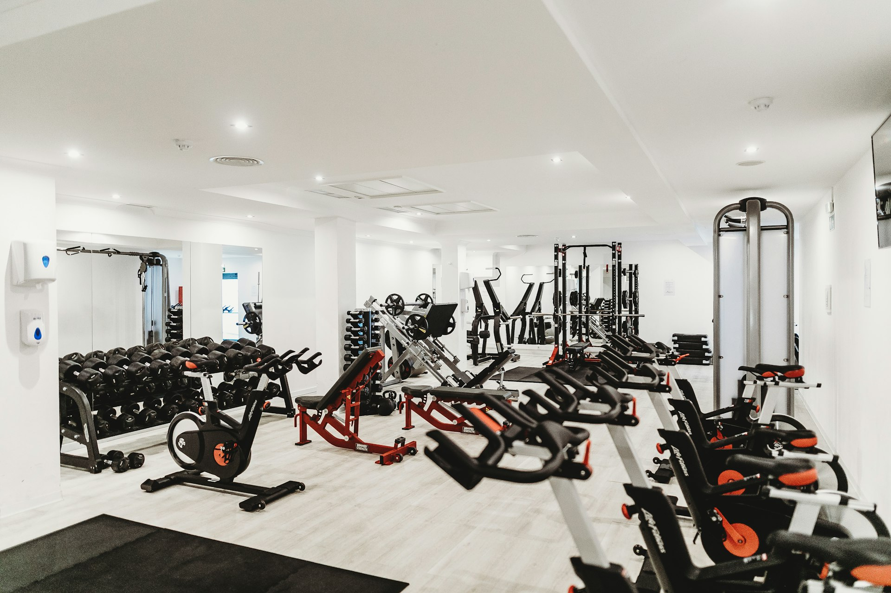